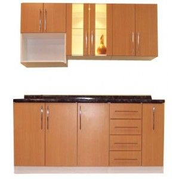

La melamina es un material plástico compuesto por resinas que recubre un tablero de aglomerado o de MDF. La melamina es un material sintético duro y resistente, ideal para la fabricación de muebles en general, y de cocina y baño en particular; gracias a que se trata de un material altamente resistente a la presencia de parásitos y microorganismos. Los tableros melamínico son cada más usados en la industria del mueble, ya que se ofrecen en una amplia variedad de colores, diseños y texturas. Además, los tableros de melamina son fáciles de trabajar; pudiendo ser cortados, perforados, clavados y fresados. La melamina es un material duradero que resiste bien el calor y que es fácil de limpiar con detergentes domésticos.
Comprar muebles de melamina se han convertido con el paso del tiempo en una opción muy bien valorada por los consumidores. Se trata de muebles económicos, con diseños actuales, duraderos y que son fáciles de limpiar. Comparados con los de madera, los muebles de melamina; si bien pierden la naturalidad de los primeros, presenta la ventaja de la resistencia al agua, sol, altas temperaturas o microorganismos; ya que la resina de la hoja de melamina crea una capa impenetrable. Los muebles de madera maciza resultan muy atractivos visualmente y al tacto, pero resultan ser mucho más delicados en cuanto al mantenimiento. Si están bien cuidados, los muebles de madera maciza tienen un bello envejecimiento; pero hay que tener en cuenta que son más delicados ante el agua o el calor.